Line-up
Previews
Josie Long: Tender
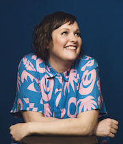
Three-time Edinburgh Comedy Award nominee and very hard to pin down indie-underdog-nightmare Josie Long is back with a new show for the first time in five years. It's about the mind-bending intensity of new motherhood, but mostly about kindness, gentleness, and joy. All in all, the edgiest thing you will see this Fringe. The aim is for you to come out of it feeling optimistic about the future, although that's a big ask. At the very least there will be some really silly voices, and that’s not nothing.
“Brilliantly evocative, an original and unflagging spirit” ★★★★ Times
Nick Helm: Phoenix From The Flames
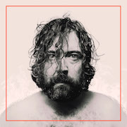
Holy f*ck! After 6 years away from Edinburgh and ahead of his National Tour, Helm is back at the fucking Fringe with a full Edinburgh run of his new show to remind the world what they’ve been missing out on. Resurrected from the ashes, come and witness two time Edinburgh Comedy Award Nominee and International Treasure In Waiting shaking his ass, singing songs and righting wrongs. You don’t deserve this…
“The man is brutal, but by AC/DC he's talented with it.” ★★★★★ The Latest
“Pretty f*cking amazing. A true comedy daredevil” ★★★★ Time Out
Photo by Edward Moore.
Lou Sanders: Say Hello To Your New Step-Mummy
Loulie AKA The face that launched a thousand dicks examines conduct (in the media, baby), mental health (other people’s, I’m fine) and perverts (that one is mainly me, actually). I’ll be oversharing, wanging on about spirituality, and giving everyone some much unwanted advice.
As seen / heard on Taskmaster, QI, 8 Out of 10 Cats Does Countdown, Hypothetical, The Russell Howard Hour, The Unbelievable Truth, Ultimate Worrier and more.
“A comedian who leaves you wanting more” ★★★★ Times
★★★★ Guardian
★★★★ Evening Standard
★★★★ Chortle
Photo by Meg Gisborne.
Adam Riches: The Beakington Town Hall Murders
Last night, 10 tortoises were massacred in a tombola-related prank gone wrong. So tonight, all members of the Beakington Council... AKA you... will be hauled before an independent adjudicator... AKA me... to find out what happened. An interactive comedy whodunnit from the mind of an absolute (Edinburgh Comedy Award-winning) twonk.
“Will make you laugh yourself silly and what could be better than that?” ★★★★★ Telegraph
“Quite simply one of the best character comedians in the country” ★★★★★ Chortle
“There's no-one quite like him” ★★★★★ Independent
Suzi Ruffell: Dance Like Everyone’s Watching
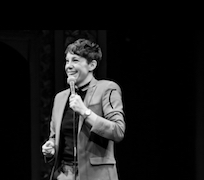
Suzi has made a name for herself turning tragedy and anxiety into big laughs. This year she is happy. This show answers the question, Are all stand ups at their best when they are miserable? Fingers crossed no.
The last twelve months have been massive for Ruffell, a smash hit UK tour, heaps of television appearances including Live At The Apollo and she’s learnt how to make the perfect lemon cake. Come and see what all the fuss is about!
“Electrifying Stand Up” Evening Standard
“A Natural Stand Up” List
John-Luke Roberts: After Me Comes the Flood (But in French) drip splosh splash drip BLUBBP BLUBBP BLUBBPBLUBBPBLUBBP!!
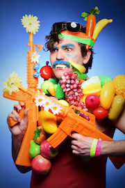
Blam blam! The critically acclaimed idiot returns with a brand new hour of extraordinary daft-hearted comedy, following a complete sell out at last years Fringe.
“Freewheeling escapism...a joy” ★★★★★ Fest
“A hit” ★★★★ Times
“Impeccably choreographed, giddily inventive, turbo-charged hour” ★★★★ Telegraph
“Killer gags...glorious idiocy” ★★★★ Guardian
Photo by Natasha Pszenicki.
Catherine Bohart
Fresh from “the sort of perfectly structured Edinburgh debut you always hope for and rarely get to see” (★★★★ Times), Catherine Bohart has some new jokes she'd like to try.
As seen on BBC2's The Mash Report and Comedy Central's Roast Battle. Writer for BBC's The News Quiz, The Now Show & Frankie Boyle's New World Order.
The Times “Comedy Face To Watch” 2019
The Guardian’s Best Shows at the Edinburgh Festival 2018
Nominee: Leicester Mercury Comedian of the Year 2018
BBC New Talent Hotlist 2017
Photo by Matt Crockett.
Larry Dean
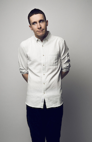
Fresh from an Edinburgh Comedy Award nomination, “unexpected and excellent” (Sunday Times) Larry Dean is here to try out some brand-new jokes.
As seen on BBC2’s Live At The Apollo and Mock The Week.
“Destined to become a household name.” ★★★★ Telegraph
Photo by Matt Crockett.
Olga Koch: If/Then
Edinburgh Comedy Award nominee Olga Koch is back! Ahead of her BBC Radio 4 special, the acclaimed stand-up tells a love story through the medium of computer programming (which she studied at university, and, like, barely ever brings up). In her feminist investigation into what happens when we can't separate love and technology, Olga will teach you how to code and explore what happens when our expectations for love, happiness and Michael Bublé no longer compute.
Directed by Charlie Dinkin.
★★★★★ Broadway Baby
★★★★ Telegraph
★★★★ Skinny
★★★★ List
★★★★ The Arts Desk
Photo by James Deacon.
Glenn Moore: Love Don't Live Here Glenny Moore
“Glenn Moore” (The List) follows up last year's Edinburgh Comedy Award nomination with a new hour of “brilliantly original, (Chortle) “blissfully silly (The Guardian) jokes. He used to have a very different job to this, and now he's finally brave enough to spill the beans about it.
As seen on Mock The Week, Stand Up Central, The Stand Up Sketch Show, and as heard on Absolute Radio.
★★★★ Guardian
★★★★ Chortle
★★★★ Evening Standard
★★★★ List
Photo by Natasha Pszenicki.
Sarah Keyworth: Pacific
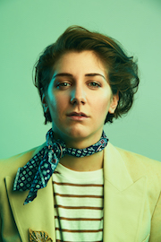
Edinburgh Comedy Award nominee for Best Newcomer and winner of the Herald Angel Award returns with a brand-new hour of comedy about the little things, the smallest details, the fixed and distinct aspects that make up what we definitively are, how we expressly think and who we unambiguously love.
“Powerful, poignant and achingly funny stuff” ★★★★★ Herald
“It's refreshing to see something so generous and outward-looking” Chortle
“The most hilarious visual images” ★★★★ Scotsman
“An absolute gem” ★★★★ Evening Standard
Photo by Matt Crockett.
Mat Ewins: Actually Can I Have Eight Tickets Please?
“I reiterate my request for a full refund and look forward to your theatre’s explanation [for] why you chose to market this show as suitable for 16-year-olds” (Audience review).
Photo by Shutterstock.
Sara Barron: Enemies Closer
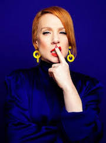
2018 Edinburgh Comedy Awards Best Newcomer nominee. Sara returns to the Fringe following her 5* debut hour and two sell-out runs at London’s Soho Theatre. Her stunning new show examines kindness, meanness, ex-boyfriends, ex-girlfriends, current husbands, all four of her remaining friends, and two of her twelve enemies.
As heard on The Guilty Feminist and BBC Radio 4.
“Destined for major stardom …simply unmissable” Times
“An excellent line in cynicism about sex, life and friendship.” Evening Standard
“Filthy and fearless.” **** Telegraph
★★★★★ Broadway Baby
★★★★★ Funny Women
★★★★★ Wee Review
★★★★★ Skinny
Photo by Karla Gowlett.
Tom Parry: Parryoke!
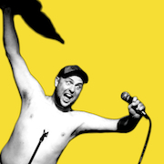
Fresh from his Best Newcomer Nomination in 2015 Parry is back with a brand new hour celebrating life, love and going tops off!
Join the largest (girth, height) third of the legendary sketch team Pappy's as he sweats, shouts and explains everything he loves about a wedding. There will be stuff, there will be nonsense, there might even be a bit of karaoke.
IMPORTANT: THIS IS NOT A MUSICAL SHOW.
“A show that believes in the SOUL NOURISHING quality of SILLINESS” ★★★★ Guardian
“A PUERILE yet PROFOUND celebration of being ALIVE” ★★★★ Evening Standard
“A thoroughly JOYOUS ROMP” ★★★★ Chortle
Fern Brady: Power and Chaos
Following sellout runs at both Melbourne & Sydney Comedy Festivals, Fern is back with her fourth solo show about sexual politics, identity, power dynamics and jizz.
As seen on Live at the Apollo, Roast Battle, Viceland, New World Order & The Russell Howard Hour. As heard on Radio 4's The News Quiz, the Now Show, blah blah blah more credits more pointless little achievements as a clown, I'm successful now but will anything really fill the emptiness?
“A thoroughly enjoyable hour” ★★★★ Herald Sun
Photo by Matt Crockett.
Jack Barry: Alien
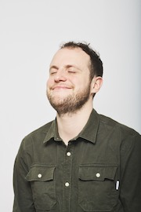
Your best friend (and acclaimed stand-up) Jack Barry is worried about you. The world’s turned to shit and you haven’t been laughing enough. He’s going to roughly slap you around the face with his jokes and tell you to get a hold of yourself. Don’t worry – everything is going to be okay.
As seen on The Russell Howard Hour and in Catastrophe, Cuckoo, Netflix’s Turn Up Charlie. Writer for Mock the Week.
“The finest of British comedy… effortlessly endearing” ★★★★★ EdFestMag
★★★★ Sunday Times
★★★★ List
★★★★ Skinny
Photo by James Deacon.
Rosie Jones: Backward
After a sell-out debut hour Rosie 'triple threat' Jones returns to the Fringe with a big question, “Am I backwards, or are they?”. She explores the hilarious difficulties of navigating the world whilst being the only disabled, gay, northern comedian with quite the penchant for sexual aggression.
Heralded as one of 'The Best-Reviewed Edinburgh Fringe Comedy Shows of 2018’, Rosie’s second hour is certain to be a hit.
“Smart, mischievous, laugh-out-loud funny” Chortle
“Genuinely masterful” Skinny
Photo by Aemen Sukkar.
Jack Rooke: Love Letters
Dear Reader, you may know me from such tragedies as ‘dead dad’ (Radio 4’s Good Grief) and ‘dead friend’ (BBC Three’s Happy Man) but this year I’m dead chuffed to perform comedy about shagging blokes! No one dies & it’s set to a beautiful live harp. Straight people welcome so long as they don’t fidget. PS: Your dad reckons you’ll love it (he’s just in my shower, says he’ll call in the week!).
Top 10 Best Reviewed Comedy Shows, Edinburgh 2017.
“Cleverly-written, awfully funny!” ★★★★★ Gay Times
“Rooke rides laughter like a seasoned stand-up.” ★★★★ Scotsman
Photo by Lewis Simpson.
Annie McGrath: Shepherd
Deadpan comic Annie McGrath returns with her third stand-up show. Dark and charmingly offbeat, Annie tackles issues of male toxicity, consent and sheep herding. The big three! Dry jokes, silly anecdotes and some potentially serious underlying themes, from a young (ish) comedian cynical beyond her years.
As seen on ITV2, BBC3, Channel 4 and Sky Sports.
Directed by Steve Hall (We Are Klang, The Russell Howard Hour).
“Smart and smutty” Evening Standard
“Hilarious” Edfringe Review ★★★★★
“Spot on comic timing... delightfully dark” Three Weeks ★★★★
“Ridiculously funny” Edinburgh Reporter ★★★★
Funny Women Awards Finalist 2018.
Photo by Edward Moore.
Garrett Millerick: Smile
The critically-acclaimed, ‘Breakthrough Act 2019’ Award Nominee returns with a defiant battlecry against the gloom; Smile.
Critics Choice: The Guardian, The Sunday Times, The Telegraph, The iPaper, The Metro, Chortle and Time Out.
“Fast becoming one of the best there is” Manchester Wire
“Wickedly funny” Scotsman
“a virtuoso display of unforgivingly grumpy stand up delivered with fire in his soul” Chortle
“a big hitting stand up set” The Guardian
“This brave and winning hour certainly pulls no punches” The Times
Photo by Matthew Hall.
Sophie Duker: Venus
Sophie Duker is your Venus, she’s your fire, your desire. Or is she? Silly, sexy, savage stand-up from a girl who’s definitely not a goddess. In her hotly anticipated full-fat woke debut hour Sophie takes her audience on an unconventional journey of self-discovery. Strap in.
Sophie co-hosts GrownUpLand on BBC Radio 4 and is the creator and host of the Evening Standard recommended comedy night Wacky Racists. As seen on Channel 4’s Riot Girls, E4’s 8 Out of 10 Cats, Comedy Central and BBC Three.
“Laugh out-loud funny” ★★★★ Telegraph
Photo by David Sell.
Matt Winning: It's The End of The World As We Know It (And I Feel Fine (But Not All The Time))
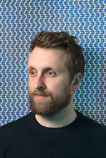
A storytelling lecture about how we cope with climate change from the 'attractively impish' (Guardian) Dr Matt Winning.
As seen as the Environmental Correspondent on Unspun with Matt Forde on Dave, BBC Three and BBC Radio 2.
“Everything a Fringe show should be: hilarious, personal, inventive, and something that will stay with you for some time to come” ★★★★★ EdFestMag
“Winning’s sharp wit and intelligence allows him to educate as he entertains” ★★★★½ Sunday Post
Photo by Jessica McDermott.
Lola and Jo: Escape
Clock’s ticking. We’re all heading for the grave. Don’t panic, character comedians Lola & Jo (“Bloody brilliant” ★★★★ Chortle) will find answers to the big questions before time’s up. Is this a low-budget escape room run by a dysfunctional duo? Is this a comedy show jumping on the zeitgeist of escape rooms to grab your attention? Or is this just an excuse for Lola & Jo to lock you in a room for 60 minutes and freak out?
“Pitch-perfect” ★★★★ Fest
“Masterful” ★★★★ List
“Duos taking risks” Guardian
“Comedy duos you need to see” Independent
Photo by James Deacon.
Stuart Laws is All In
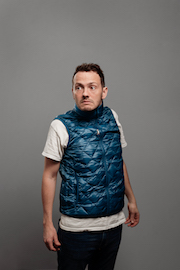
Acclaimed stand-up (and the UK’s foremost gilet apologist) Stuart Laws reflects on the day his life changed forever when he risked everything in a Vegas poker tournament. A show about making difficult decisions, choosing different paths and gettin’ jiggy wit it.
Stuart has appeared on BBC Radio 4, produced James Acaster’s Netflix specials and his live reporting of a dirty plates war became one of the most talked about Twitter threads of the year.
“You’ll struggle to find a comedian with a better jokes per minute rate… A one-man episode of Arrested Development” ★★★★ Fest
Photo by Edward Moore.
Laura Davis
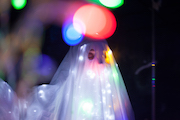
Dark, bold and razor sharp Australian comedian Laura Davis is internationally critically acclaimed as one of the most unique comedic voices around. Unconventional, cathartic and exhilaratingly hilarious, this is her brand-new hour.
“A different kind of provocative… smart, challenging, ambitious, playful and funny.” Chortle
“An hour with Laura Davis leaves you uplifted, somewhat bewildered and utterly amazed by such blistering talent.” Time Out
Photo by James Penlidis.
Grace Campbell: Why I’m Never Going Into Politics
Grace Campbell survived a childhood in British politics. Her Dad, Alastair Campbell, started working closely with Tony Blair weeks after Grace was born.
Now, at 24, a very feisty Grace, who co-founded feminist group The Pink Protest, wants to tell you why she’ll never consider a career in Westminster.
Expect talk about her vagina, stories of hanging out with Putin’s kids plus trying, and failing, to bring the Labour party back together… Grace is laugh out loud funny, wildly outspoken with a compassion for the world that might make you hopeful for the future.
“A bold, political feminist voice for our times.” Glamour
“Grace is hilarious... much funnier than her Dad.” Ed Miliband
Photo by Amelia Allen.
Joz Norris Is Dead. Long Live Mr Fruit Salad.
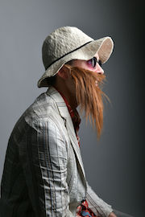
Joz Norris has retired or possibly died, who cares? All that matters is Mr Fruit Salad, a fictional chimaera he created as a form of self-care, has developed autonomy and is putting on a solo show. Absurdist meditation on anxiety and grief performed by an idiot from Pontefract who doesn't exist. Sell-out show at VAULT Festival and Leicester Comedy Festival 2019.
As seen/heard on BBC3, Channel 4, ITV2, Dave and BBC Radio 4.
“An absolute idiot... Simple, silly and screamingly funny” Fest
“A comedy legend” ToDoList.org.uk
Photo by Steve Ullathorne.
Helen Bauer: Little Miss Baby Angel Face
Helen enjoys a drama. She is her mother’s daughter, taking a small situation, blowing it up and then getting upset that it’s out of her control. Just like all the best reality TV. At the same time she dreams of being a sweet angel who handles any drama with grace. Who doesn't overthink everything and plan for how she will have all eyes on her at the right moment.
Highly anticipated debut hour from the 2018 BBC New Comedy Award Finalist.
As seen and heard on BBC Three, Comedy Central and Radio 4.
Photo by James Deacon.
Alex Kealy: Rationale
Political comedian and “rising star of the British stand-up scene” (List) Alex Kealy explores the emotional roots of our rational thoughts. But funny, though.
“A storming show from the whimsical funnyman” Sunday Times
“This is clever comedy...you've done yourself some internal damage from laughing so much” ★★★★ Shortcom
“Hilarious...fresh, insightful, and original...great hour of cerebral stand-up” ★★★★ Fringe Guru
“Well thought out and insightful...a very enjoyable hour of comedy” ★★★★ TheatreWeekly
“Ferociously quick-witted” ★★★★ EdFringeReview
“An hour of self-aware and intelligent comedy” ★★★★ Bunbury Magazine
“This is intelligent, informative, funny stuff from an important voice” Three Weeks
“Marvellous stand-up” (The Skinny)
Photo by Edward Moore.
Rachel Fairburn: The People's Princess
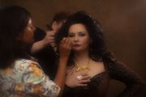
Rachel’s been described by some losers as obnoxious, rude and contrary. However, she thinks she’s absolutely adorable and the natural choice for the dormant title of The People's Princess.
★★★★ ThreeWeeks
★★★★ Skinny
★★★★ One4Review
Siân Docksey: Canary
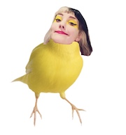
Child-turned-retired-child Siân Docksey tells you all the things she’s had to explain to her parents. A new stand-up show about being a rubbish oldest sibling, capitalism, queer stuff, and Cher.
Featured in The Telegraph's Funniest One-Liners of the Edinburgh Fringe 2017.
“Joy and bewilderment in equal measure” ★★★★ Skinny
“Siân Docksey has got her weird in order.” ★★★★ Funny Women
“I ain't ever seen anything quite like that!” ★★★★ Mumble Comedy
“Silly, nonsensical, political, feminist and weird” One4Review
Flora Anderson: Romantic
Ridiculously self-aware middle-class dreamer Flora does a show about trying and failing to be creative in the big city. Is she an epic Romantic vagabond or just an entitled absolute pr*ck? She's chasing a dream, but the chase might be much, much funnier.
Debut hour from the Laughing Horse New Act of the Year finalist.
“A promising comedian” (Guardian) with a “well-tuned political antennae” (Chortle.co.uk).
Comperes
Comperes TBC!